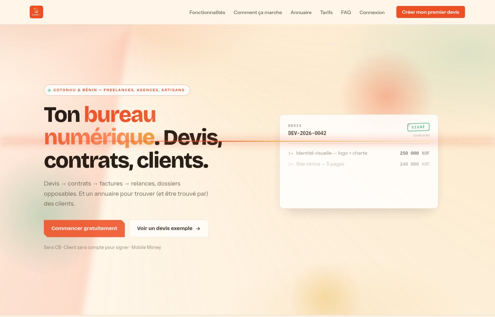

Backend & Cybersécurité | Architecte
Passionné par l'innovation, je crée des systèmes robustes, sécurisés et intelligents, avec une expertise forte en architecture backend et cybersécurité réseau.
Terminal & Diagnostic Système
Testez directement l'environnement technique. Cliquez sur une commande rapide ou saisissez votre propre commande.
4 Piliers d'Ingénierie
Un équilibre éprouvé entre conception d'architectures backend pérennes, rigueur de sécurisation et maîtrise des systèmes sous-jacents.
Architecture Backend & API REST
Conception de serveurs robustes et modulaires sous Laravel 11 et PHP 8. Modélisation relationnelle rigoureuse sous MySQL, découplage MVC, authentification sans état par tokens JWT et standardisation de routes RESTful.
Cybersécurité & Pentest Web
Application proactive des standards OWASP Top 10. Détection et remédiation des injections SQL, failles XSS, CSRF et IDOR. Audit d'API avec Burp Suite et Nmap, durcissement du code (Secure Coding) et veille CTF.
Réseaux & Administration Linux
Maîtrise des environnements serveur Debian / Ubuntu en ligne de commande. Analyse fine des trames réseau et diagnostics de paquets avec Wireshark, automatisation par scripts Bash et sécurisation SSH/DNS.
Machine Learning & Détection Intelligente
Entraînement et déploiement de modèles supervisés avec Python et Scikit-Learn (Random Forest). Application concrète à la détection de fraudes transactionnelles et interfaces de pilotage via Streamlit.
Projets Phares
Des solutions conçues pour répondre à des problématiques réelles de sécurité, de collaboration et d'analyse.

Backend · Excellence TeamContravo — Devis, contrats, clients
Backend du bureau numérique d’Excellence Team : devis, signature sans compte, paiement Mobile Money vérifié côté serveur.
AcademiX — Plateforme Éducative
Plateforme collaborative d'apprentissage développée en équipe en 48h sous contrainte. Backend API Laravel modulaire (Demi-finaliste HackByIFRI).
 Machine Learning & Fraude
Machine Learning & Fraude
Fraud Guard AI — Transactions
Détection proactive des transactions frauduleuses par classification binaire supervisée (Random Forest) avec interface Streamlit interactive.
Palmarès & Leadership
Une participation active aux compétitions technologiques d'envergure et un engagement constant dans la gouvernance étudiante.
Technova Challenge
Vice-champion avec le projet LeTwin, solution d'émulation numérique pour l'optimisation industrielle.
EPITNET Hackathon
2e Prix pour une solution intelligente d'aide au diagnostic médical exploitant le Machine Learning.
HackByIFRI
Demi-finaliste du hackathon IFRI avec AcademiX, plateforme d'entraide étudiante en 48h chrono.
Opération Nova CTF
Podium au challenge national de cybersécurité (résolution d'épreuves d'exploitation web et stéganographie).
Excellence Team
Co-fondateur & Directeur Général d'un collectif d'innovation numérique regroupant des talents universitaires.
INSTI Lokossa (L3)
Responsable de classe de la promotion Licence 3 d'Informatique & Télécommunications.
Prêt à collaborer sur un projet technique ou sécuritaire ?
Que ce soit pour le développement d'une architecture Backend (Laravel/PHP), l'audit de vos API contre les vulnérabilités OWASP, ou une opportunité de stage/freelance, échangeons directement.